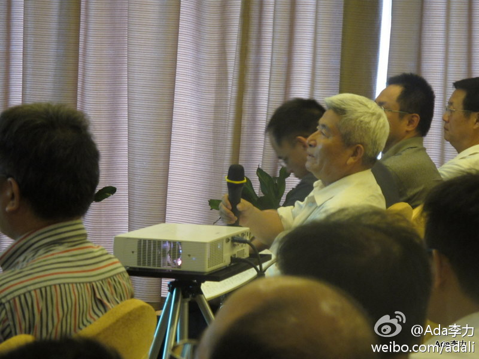

是这样, 我每次都拉黑, 间或举报, 现在就很少了. //@吴晋-CliffWoo:很奇怪，我的僵尸粉很少，开始的时候遇到一些，但是每次我都举报，现在反而没有什么僵尸粉了@ipconfigme:sina微博的僵尸粉丝太严重了，基本上每发一推都会有僵尸粉丝。极度怀疑是不是sina自己搞的，点过去都是广告，什么衣服化妆品什么的。摆脱能不能推些相关的出来。
#甲骨文架构师沙龙#王坚分享的"如何打造和运营SaaS应用服务", 介绍了物流电子商务云计算平台. 目前, 云很火, 电子商务很火, 物流是电子商务中关键的一条. 没参加的朋友可以等着看视频. 王坚介绍: 网页链接 @奥林科技
#甲骨文架构师沙龙#王坚的SaaS话题之后, 坐第一排的来自网达物流的参会者连提两个问题。时间有限，只能请他们把问题放在Open Space交流环节。提供交流机会和交流时间， 是提升技术会议价值和影响力的一种方式。 
应该采访采访这老兄。 //@程时旭:我们去年的杭州HCM会议，砸完我们就砸阿里巴巴，这老兄真是好学不倦啊!!@暗香浮动月黄昏之 @Lillian_DD 看见了木有？白头发老兄不能让进噢//@甲骨文-张月强：那个白头发老先生是砸场子的，逢会必去。@Ada李力:#甲骨文架构师沙龙#王坚的SaaS话题之后, 坐第一排的来自网达物流的参会者连提两个问题。时间有限，只能请他们把问题放在Open Space交流环节。提供交流机会和交流时间， 是提升技术会议价值和影响力的一种方式。
我听过System ISV的Gary讲过一次内部交流中，Weblogic部门的人非常自豪，说他们的努力让Exalogic快了多少多少倍。Gary会后走过去跟他澄清，说性能提升也包括Soloris在硬件上的调优努力，而这部分技术就是Gary部门做的。[呵呵]
他之前是杭州电子科技大学的老师，退休后发挥余热，目前在网达物流，确实很好学。 //@Ada李力:应该采访采访这老兄。 //@程时旭:我们去年的杭州HCM会议，砸完我们就砸阿里巴巴，这老兄真是好学不倦啊!!@暗香浮动月黄昏之 @Lillian_DD 看见了木有？白头发老兄不能让进噢@Ada李力:#甲骨文架构师沙龙#王坚的SaaS话题之后, 坐第一排的来自网达物流的参会者连提两个问题。时间有限，只能请他们把问题放在Open Space交流环节。提供交流机会和交流时间， 是提升技术会议价值和影响力的一种方式。
#甲骨文架构师沙龙# @曾宪杰_华黎 介绍了“淘宝架构变迁和挑战”。中午吃饭时，他说淘宝差不多是中国互联网企业中使用Java技术规模最大的一家，但外部人员过于关注淘宝的运营，而实际淘宝的技术力量也很强。